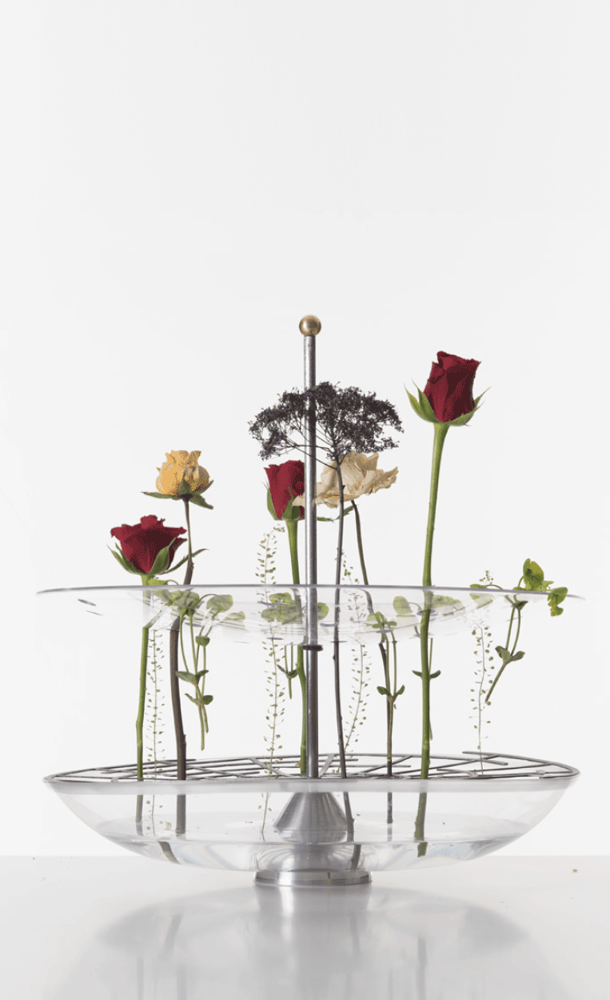

Vase suspendu
2017
- Projet d'études
Quel récipient pour observer les fleurs autrement ?
Ce projet de 2 semaines a été réalisé en collaboration avec Sidonie Couëdel.
Dans ce vase, les fleurs sont placées individuellement, avec attention et conscience du geste, dans les trous du plateau prévus à cet effet.
Un autre regard peut alors se poser sur la fleur, à la fois comme objet unique de contemplation ou comme partie intégrante d’une composition.
Un joint de caoutchouc permet à l’utilisateur d’ajuster à loisir la hauteur de son vase, pour s’adapter (ou non) à la taille des tiges.
La grille inférieure joue à la fois le rôle de guide pour ces dernières et de surface de desserte.

Un joint de caoutchouc permet à l’utilisateur d’ajuster à loisir la hauteur de son vase, pour s’adapter (ou non) à la taille des tiges.
La grille inférieure joue à la fois le rôle de guide pour ces dernières et de surface de desserte.